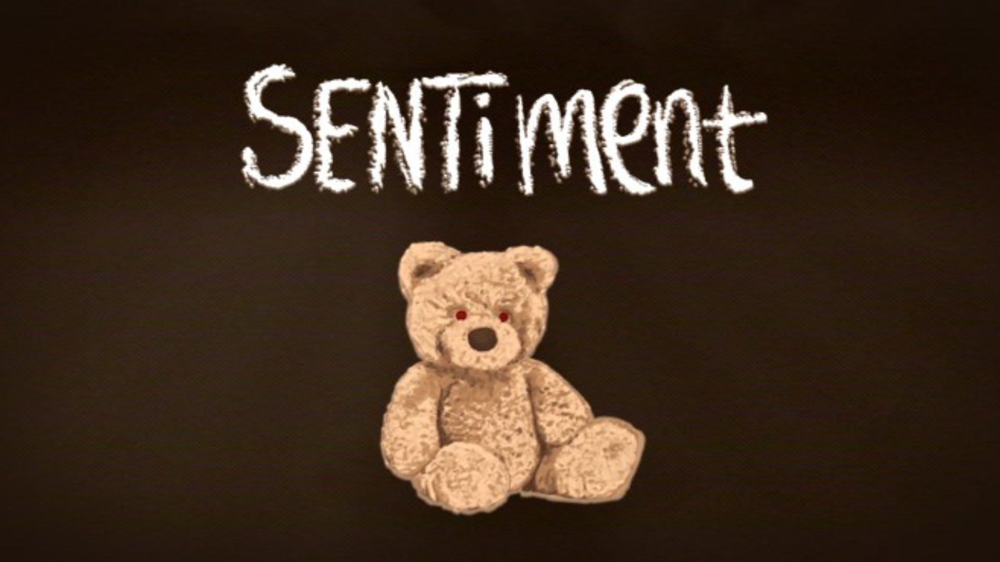

Sentiment
Description
Play as a little boy in a hurry to get the tasks done before your
dad comes back home. Scrub the floor, put everything back where it belongs,
and be in bed with the light off before the door opens.
Get it all done, and maybe nothing happens tonight.
Project Info
Role: Gameplay, UI & Audio Programmer
Team size: 8
Engine: Unreal Engine 5
Tools: Perforce, Maya
Duration: 48 hours
Date: April 2026
Awards: Best Audio & Participant's Pick Winner
Theme: You Are Not Alone
My Experience
For Sentiment, my main focus this time was the core gameplay loop, making sure that there are events happening one after the other,
that there is a sense of urgency for the player, that there is a win, and a lose condition, and that the player always have a sense of direction
while a need to think fast.
I also worked on the UI, the AI, and implemented all the sounds made by our sound designer.
Winning for a second time at the Behaviour Interactive Game Jam was truly satisfactory. For me, it is a reflection of how well I can perform under pressure,
specially since I took a leadership role during this jam. We designed every system around making the player feel nervious and uneasy. Finally,
we wanted to show the jury and players a harsh reality that many children face in their homes, trying to raise awareness about the
importance of mental health and the impact of domestic violence on children.